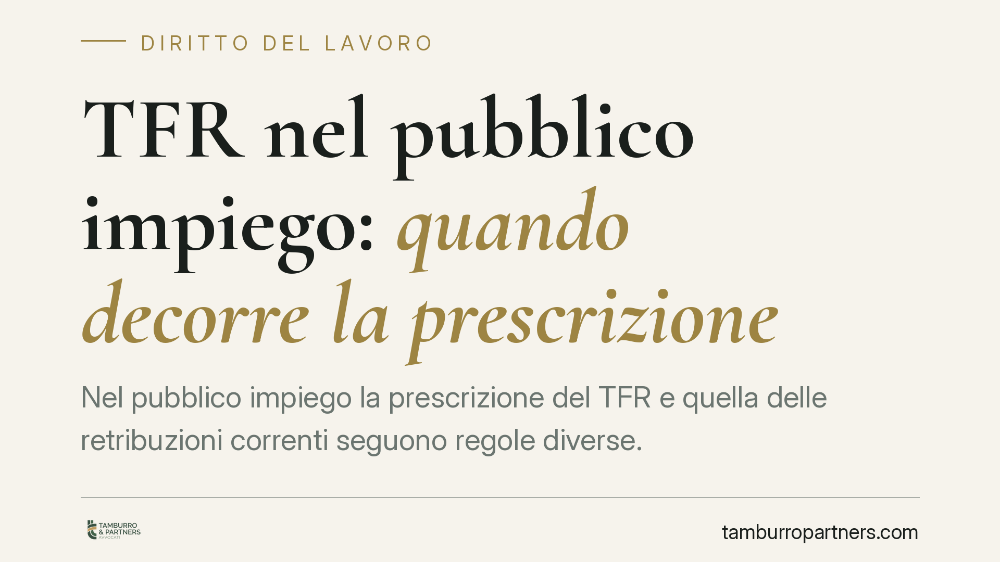

TFR nel pubblico impiego: quando decorre la prescrizione
Nel pubblico impiego la prescrizione del TFR e quella delle retribuzioni correnti seguono regole diverse. Il trattamento di fine rapporto matura e diventa esigibile solo alla cessazione; le retribuzioni, invece, si prescrivono anno per anno. Capire il momento da cui parte il termine è decisivo per non perdere crediti ancora azionabili, soprattutto per chi lavora in modo precario o irregolare.

Il problema: due prescrizioni, tempi diversi
La prescrizione è il meccanismo per cui un diritto non esercitato entro un certo tempo non è più azionabile in giudizio. Per i crediti di lavoro il termine ordinario è quinquennale (art. 2948 n. 4 c.c.: cinque anni per «tutto ciò che deve pagarsi periodicamente ad anno o in termini più brevi»).
Il punto delicato non è la durata del termine, ma il suo punto di partenza, il cosiddetto *dies a quo*. E qui il TFR e le retribuzioni correnti seguono strade diverse.
Inquadramento normativo
La regola generale è nell'art. 2935 c.c.: la prescrizione decorre dal giorno in cui il diritto può essere fatto valere. Un credito non ancora esigibile non può prescriversi.
Il trattamento di fine rapporto (art. 2120 c.c.) matura durante il rapporto ma diventa esigibile solo alla sua cessazione. Prima di quel momento il lavoratore non può pretenderne il pagamento: di conseguenza, la prescrizione del TFR decorre dalla cessazione del rapporto. Questo vale sia nel lavoro privato sia nel pubblico impiego, dove il rapporto è ormai regolato dalla disciplina privatistica per effetto del rinvio contenuto nell'art. 2, comma 2, del D.lgs. 165/2001.
Discorso diverso per le retribuzioni correnti. Qui incide la stabilità del rapporto. La Corte costituzionale, con la storica sentenza n. 63/1966, ha stabilito che la prescrizione delle retribuzioni può decorrere anche in costanza di rapporto quando il lavoratore gode di stabilità, perché non teme ritorsioni nel chiedere quanto gli spetta. Con la sentenza n. 26/2018, la Consulta ha poi affrontato l'assetto del lavoro privato dopo le riforme che hanno ridotto la tutela reale contro il licenziamento, aprendo la strada all'orientamento per cui, in assenza di stabilità piena, il termine può decorrere dalla cessazione del rapporto.
Implicazioni pratiche
La distinzione ha effetti molto concreti e cambia a seconda del tipo di lavoratore.
Il dipendente pubblico stabile gode della massima tutela: per lui la prescrizione delle retribuzioni correnti può correre già durante il rapporto. Chi non reclama nei cinque anni rischia di perdere le differenze retributive più risalenti. Il TFR, invece, resta al sicuro fino alla cessazione, perché prima non è esigibile.
Il lavoratore precario o con rapporto autonomo irregolare (si pensi a molte situazioni nella sanità e nella scuola) è in posizione più fragile sul piano sostanziale, ma la mancanza di stabilità può giocare a favore sul piano della prescrizione delle retribuzioni: il termine tende a decorrere dalla fine del rapporto. Anche qui, però, la valutazione dipende dalla concreta configurazione del rapporto e va fatta caso per caso.
In sintesi: sul TFR il rischio prescrizione è più contenuto, perché il termine parte dalla cessazione; sulle retribuzioni correnti il rischio è reale e va monitorato durante il rapporto, in particolare per chi ha un impiego stabile.
Cosa fare in concreto
- Ricostruisci la cronologia dei pagamenti e delle voci retributive, individuando le somme che ritieni non corrisposte e la loro data di maturazione.
- Distingui il TFR dalle retribuzioni correnti: sono soggetti a decorrenze diverse e vanno trattati separatamente.
- Interrompi la prescrizione con un atto scritto idoneo (PEC o raccomandata a/r con richiesta espressa del credito): l'interruzione fa ripartire il termine da zero.
- Conserva la documentazione: cedolini, contratti, comunicazioni dell'amministrazione, prove dell'attività svolta nei rapporti irregolari.
- Verifica per tempo l'assoggettabilità dei singoli crediti al termine quinquennale: sui rapporti complessi è opportuna una verifica tecnica puntuale, perché le decorrenze variano con la natura del rapporto.
Un'avvertenza sui termini
La materia è in evoluzione e la giurisprudenza ha più volte ricalibrato il rapporto tra stabilità del rapporto e decorrenza della prescrizione. Le regole generali qui esposte (art. 2935 c.c., art. 2948 n. 4 c.c., art. 2, comma 2, D.lgs. 165/2001) offrono la cornice; la loro applicazione al singolo caso richiede l'analisi delle circostanze specifiche.
Disclaimer
Contributo informativo a cura di Tamburro & Partners - Avv. Giuseppe Tamburro. Non costituisce parere legale.
Ogni storia di lavoro ha i suoi tempi.
Se gestisci HR e vuoi un confronto su contenzioso, ispezioni o licenziamenti, scrivi allo studio. Ti rispondiamo entro un giorno lavorativo.